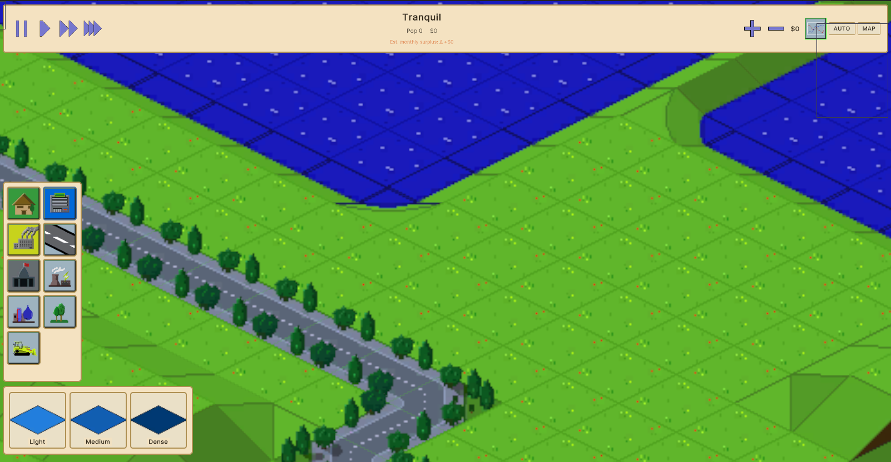
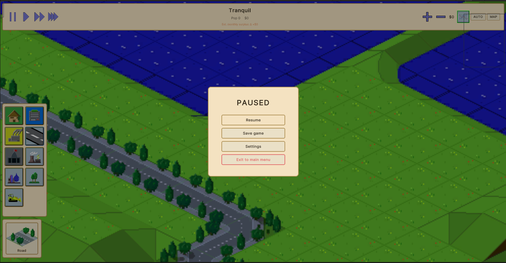

Rebuild the pre-migration game UI on top of the current UI Toolkit pipeline — using and, where required, extending the existing UXML/USS/TSS bake handler, ModalCoordinator, and Host pattern. Self-contained HTML brief: hand to a fresh main session for implementation.
Hover info card (right side, tan card): Grid (x,y) / chunk / Height / Surface / Prefab / Owner — appears when hovering a cell.
Chrome theme: dark navy bg #000-ish · tan/cream borders #f5e6c8 around every panel. Toolbar tile bg cream-tan with dark icon.
Goal B — MainMenu (pre-migration target). Source: tools/reports/bridge-screenshots/mainmenu-final-uitk-deactivated-20260513-194225.png
Layout: dark grey full-screen bg; centered title "Territory" in tan serif/light; 5 stacked tan buttons (Continue · New Game · Load · Settings · Quit) below; footer "Bacayo Studio" bottom-left, build code bottom-right.
Buttons: cream/tan fill #ede4ce, dark text, subtle round corners, generous padding. No icons.
NB: A "Continue" button (above "New Game") is needed — current UI Toolkit panel has only New Game / Load / Settings / Quit. Continue = "load most-recent save" — already wired in MainMenuHost.OnLoad(); just add the button.
Goal C — CityStats modal (real pre-migration screenshot)
Goal C — City Stats modal open over CityScene HUD. Source: tools/reports/bridge-screenshots/rebake-stats-final-20260512-214717.png · city "Stratford".
Header: ‹ back-arrow left, "City Stats" centered. Modal card dark slate #2a2d33, subtle tan border, rounded corners.
Tab strip (3 tabs): population (active = blue fill #5b7fa8), services, economy. Lowercase labels.
Right cluster of 3 segmented chips: 8mg · 12mg · g) -1mg — growth/budget indicators. Active first chip blue, rest dark.
Body: empty top area (chart slot, deferred); 2-col KPI list at bottom — Power 0 · Water 0 · Waste 1 · Police 1 · Fire 1 · Health 1 · Education 1 · Parks 1 · Transit 1 · Roads 1 (green icon) · Happiness 1.
Surrounding scene: top HUD strip + left toolbar tile grid remain visible underneath; modal sits centered above the iso map. Hover info card on right still active.
Note vs SVG mockup above (now removed): no "Auto / Mng / Crime" toggle cluster — actual UI uses three growth/budget chips (8mg / 12mg / g) -1mg). Implementer authors panels.json children to match the real screenshot, not the prior SVG approximation.
Goal D — Subtype picker (Residential tier selection, pre-migration)
Goal D — Subtype picker open: Residential parent tile clicked → 3 tier cards at bottom-left. Source: tools/reports/bridge-screenshots/picker-verify-residential-20260512-200708.png.
Picker anchor: bottom-left corner of screen, BELOW the toolbar tile grid — NOT a centered popup modal. 3 horizontal tier cards (Light · Medium · Heavy / Dense) with chevron-style yellow tier icons on dark slate bg.
Trigger: Residential parent tile in left toolbar gets active outline (cream/tan glow) when clicked → picker fades in.
Card contents: tier icon (yellow chevron stack — 1/2/3 stacked = L/M/H), label below. Active tier = blue fill outline.
Dismiss: click outside picker, or click another parent tile, OR click a tier card (selects + closes).
Correction vs §6 Phase D2 (recovery plan original wording): picker is NOT a centered modal opened via ModalCoordinator.Show("tool-subtype-picker"). It's a HUD-anchored panel at bottom-left of screen with position:absolute; left:8px; bottom:8px. Closer to the time-controls strip than to a modal popup. Action: rewrite Phase D2 to anchor picker via USS absolute positioning at bottom-left; trigger by direct Host call ToolSubtypePickerHost.Open(parentSlug), not coordinator routing.
dark navy bg panel card tan/cream panel chrome tan border #b89b5e tab-active blue tier-card chevron yellow
2 · Current state vs goal — gap diagnosis
Surface
Pre-migration target
Current UIToolkit
Gap → action
MainMenu
5 tan buttons (Continue·NewGame·Load·Settings·Quit) on dark bg; "Territory" title; footer.
main-menu.uxml: 4 buttons (NewGame·Load·Settings·Quit). Dark theme bg = OK. No Continue, no footer, no cream button colors.
P-C Add btn-continue + footer; switch button colors to tan via cream theme.
Hud-bar
Pause btn, mini-map preview tile, city name + stacked pop/money, surplus caption, zoom +/−, money readout, AUTO+MAP toggles.
hud-bar.uxml: only Money / Budget-delta / CityName / Date / Weather / Happiness labels. No buttons, no zoom, no surplus caption, no AUTO/MAP.
toolbar.uxml = empty <ListView>. No items wired, no icons.
P-D Replace ListView with explicit grid of Button tiles + background-image USS bound to Assets/Sprites/Icons/icon-*.png.
Subtype picker
HUD-anchored panel bottom-left (NOT modal). 3 horizontal tier cards (L/M/H) with yellow chevron icons + blue active outline. Appears below toolbar on parent tile click.
tool-subtype-picker.uxml exists; UIDocument GO absent from CityScene; Host stub.
P-D2 Inject GO; anchor USS position:absolute; left:80px; bottom:12px; Host opens via direct call (NOT ModalCoordinator → avoids pause-owner side effect).
Tiny preview tile inside top-bar left cluster (per goal A).
mini-map-uidoc empty; no RT, no projection.
P-G Phase G — RenderTexture camera + VisualElement.style.backgroundImage binding. Defer full grid sampling — flat RT capture from IsometricCamera sufficient for parity.
Hover info card
Right-side tan card with Grid/Chunk/Height/Surface/Prefab/Owner on cell hover.
info-panel.uxml exists; InfoPanelHost + InfoPanelAdapter exist but not wired to cell-hover event.
P-F2 Hook GridHoverProbe (existing service) → InfoPanelHost.SetCell(cell); position panel right-anchored.
Cream/tan panel chrome
All panel borders/buttons = tan #b89b5e on cream #f5e6c8.
dark.tss ships dark surfaces only (no cream tokens).
Plan §2.5 said "use 🏘 🛣 ⛏ 🏗 emoji". Unity's default font (Liberation Sans) ships no emoji glyphs; tiles render blank. Real pixel-art icons already exist at Assets/Sprites/Icons/icon-*.png — this plan must use them via USS background-image: url("...").
Mistake 2 — Deferred cream/tan chrome
Plan §2.7 punted "cream/tan parity" to a separate pass. But that is the visual identity in every screenshot. Punting it = the recovered UI still looks wrong. This plan ships cream.tss in Phase A and assigns it to every modal + toolbar tile.
Mistake 3 — ListView for toolbar
Goal A toolbar = static 9-tile grid, not a scrollable list. ListView added complexity (itemsSource binding, makeItem callback, bindItem callback) and never got wired. This plan uses a flat <VisualElement class="toolbar__grid"> with explicit children.
Mistake 4 — Toggler buttons in hud-bar
Plan §2.3 added 📊💰📖⏸ togglers into hud-bar right cluster. Pre-migration UI has no such buttons there. Stats/budget open from the toolbar + cell-click + hotkey, not from HUD. This plan respects that; HUD stays read-only.
Mistake 5 — Manager wiring stubs left as Debug.Log
TimeControlsHost, ToolbarHost both still log "stub; wire X" → user clicks do nothing. This plan replaces every stub with the actual TimeManager/UIManager/ModalCoordinator call.
Mistake 6 — Bake-cache mismatch
Per feedback memory feedback_ui_bake_prefab_rebake: UXML/USS edits need an explicit npm run unity:bake-ui rebake before Play Mode picks them up. Prior plan ran compile-check only and missed bake. This plan gates each phase on bake → compile → bridge-snapshot.
4 · Recovery strategy — three pillars
Use the bake pipeline, not hand-edits. All UXML/USS lives in Assets/UI/Snapshots/panels.json (DB-derived snapshot). Hand-edited Assets/UI/Generated/*.uxml get overwritten on next bake. Phase A1 adds a "freeze handle" (panel_freeze: true in panels.json) for surfaces this plan owns, OR re-authors the source rows in panels.json so re-bake produces the right output. Pick re-author — it's the project's stated direction (DB-primary).
Use existing assets. Sprite icons at Assets/Sprites/Icons/icon-*.png + button frames at Assets/Sprites/Buttons/*.png already exist (legacy uGUI shipped them). Wire via USS background-image: url("project://database/Assets/Sprites/Icons/icon-X.png").
Use existing managers.UIManager, TimeManager, ModalCoordinator, InfoPanelAdapter, CityStats, EconomyManager all live and work. Hosts wire to them — no new game-logic services.
5 · Architecture deltas to the toolkit
5.1 · Two-theme bake
Add Assets/UI/Themes/cream.tss emitted by TssEmissionService from a second token set. panels.json gets a theme: "dark" | "cream" field; UxmlEmissionService picks the right <Style src="..."> in the generated UXML head.
/* Assets/UI/Themes/cream.tss — Phase A1 */
:root {
--ds-color-bg-base: #1a1d24; /* outer dark backdrop */
--ds-color-bg-card: #f5e6c8; /* panel fill (cream) */
--ds-color-bg-card-inner: #ede4ce; /* button fill */
--ds-color-bg-elev: #2a2d33; /* hover */
--ds-color-text-primary: #3a2f1c; /* dark on cream */
--ds-color-text-muted: #6b5a3d;
--ds-color-accent: #b89b5e; /* tan border / accent */
--ds-color-accent-2: #d4b87a;
--ds-color-tab-active: #5b7fa8;
--ds-color-warn: #e58c4a; /* "Est. monthly surplus" caption color */
--ds-color-success: #6aaa64;
}
5.2 · Sprite-backed buttons
New USS utility class set .icon-btn in a shared icon-buttons.uss (imported by toolbar.uss, hud-bar.uss, time-controls.uss):
Current RegisterMigratedPanel only flips VisualElement.style.display. Because every modal UIDocument GO is SetActive(false) in the scene, the Host never runs OnEnable, so Register is never called → Show(slug) falls through to the legacy TryOpen branch (which logs "unknown slug").
Fix: stage all modal UIDocument GOs SetActive(true) in the scene, but with USS display:none on the root. Hosts call RegisterMigratedPanel(slug, root) on enable; coordinator owns visibility going forward. This avoids the GO-toggle dictionary plumbing from the prior plan; simpler and works inside the existing API.
5.4 · Bake-handler theme dispatch
One-line extension in UxmlBakeHandler.BakePipeline.cs:
// before
ctx.WriteUxmlHead(theme: "dark");
// after
var theme = panel.fields.theme ?? "dark"; // read from panels.json
ctx.WriteUxmlHead(theme);
And in UxmlEmissionService: emit <Style src="project://database/Assets/UI/Themes/{theme}.tss"/> using passed theme.
// MainMenuHost.cs — add in OnEnable()
_btnContinue = root.Q<Button>("btn-continue");
if (_btnContinue != null) _btnContinue.clicked += OnContinue;
void OnContinue()
{
// Same as OnLoad but only show button when a save exists.
var path = ResolveMostRecentSavePath();
if (string.IsNullOrEmpty(path)) return;
GameStartInfo.SetPendingLoadPath(path);
SceneManager.LoadScene(CitySceneBuildIndex);
}
// Hide Continue button when no save exists:
if (string.IsNullOrEmpty(ResolveMostRecentSavePath()))
_btnContinue?.AddToClassList("hidden");
6 · Mechanical execution phases
Each phase = one PR-equivalent unit. Run npm run unity:bake-ui && npm run unity:compile-check && npm run db:bridge-preflight between phases. End-of-phase verification via capture_screenshot bridge call compared against the goal screenshot.
Phase A — Cream theme + bake-handler theme dispatch
A1 · Write Assets/UI/Themes/cream.tss with the token set above. OR, if TssEmissionService already supports theme switch, register a "cream" token map in panels.json and let bake emit the .tss.
A2 · Patch Assets/Scripts/Editor/Bridge/UxmlBakeHandler.BakePipeline.cs + UxmlEmissionService.cs to honor theme field on panel row.
Note: Add icon-zoom-in.png + icon-zoom-out.png to Assets/Sprites/Icons/. These don't exist yet — generate via tools/sprite-gen/ or hand-author 16×16 pixel-art versions.
C2 · Add footer children (main-menu-footer-left label "Bacayo Studio", main-menu-footer-right label "--" or build code).
C3 · Update main-menu.uss emission to anchor footer bottom; cream button styling via theme tokens (already covered by Phase A).
C4 · MainMenuHost.cs: wire btn-continue.clicked → OnContinue; hide button if no save.
C5 · Bake + compile + bridge snapshot of MainMenu → diff vs Goal B.
Phase D — Toolbar tile grid + Subtype picker
Replace toolbar ListView with explicit 2-col grid of icon-btn instances. Each tile's action on press = toolbar.select-tool with payload.parent = slug. ToolbarHost wires click → ModalCoordinator.Show("tool-subtype-picker") with parent slug passed via a new ShowWithContext(slug, ctx) overload (or via a static ToolSubtypePickerHost.PendingParent field).
Toolbar tile spec (9 tiles, 2-col grid)
Row
Col A
Col B
1
icon-zone-residential · slug zone-r
icon-zone-commercial · slug zone-c
2
icon-zone-industrial · slug zone-i
icon-road · slug road
3
icon-services · slug services
icon-power · slug building-power
4
icon-water · slug building-water
icon-landmark · slug landmark
5
icon-bulldoze · slug bulldoze
(empty)
Subtype picker — HUD-anchored panel, NOT a centered modal (corrected per Goal D real screenshot). Steps:
Add a new tool-subtype-picker-uidoc GameObject to CityScene (duplicate time-controls-uidoc structure since both are HUD-anchored, not modals). Set its UIDocument.visualTreeAsset to Assets/UI/Generated/tool-subtype-picker.uxml; m_IsActive: 1; sortOrder: 25 (above toolbar=20, below modals=100).
Attach ToolSubtypePickerHost MonoBehaviour. Picker root hidden by default via USS display: none.
In panels.json tool-subtype-picker row, set params_json to {"width": 320, "height": 96, "anchor": "bottom-left"}. USS emits position: absolute; left: 80px; bottom: 12px; (clears the 64px toolbar width + gap). Layout: horizontal flex row, 3 tier cards each ~96×80px, dark slate bg, blue active outline on selected card.
Trigger path: NOT via ModalCoordinator.Show("tool-subtype-picker"). Instead: ToolbarHost.OnToolSelected(parentSlug) → call ToolSubtypePickerHost.Open(parentSlug) directly (or via static UIManager.OpenSubtypePicker(parentSlug)). Coordinator stays out of the path — picker is a HUD widget, not a modal.
Host.Open(parentSlug): switch on parentSlug → populate the 3-card list (Residential = L/M/H, Commercial = L/M/H, Industrial = L/M/H, Forest = Sparse/Medium/Dense, etc.); root.style.display = Flex; pre-select current tier; tier-card clicked += calls UIManager.SetTool(parentSlug, tierSlug) + Hide().
Host.Hide(): root.style.display = None. Auto-Hide also fires on (a) any other parent tile click, (b) Esc, (c) click outside picker bounds.
Tier-card icon: USS background-image referencing a tier sprite (yellow chevron stack — 1/2/3 stacked chevrons). If Assets/Sprites/Icons/icon-tier-{light,medium,heavy}.png are missing, generate via sprite-gen at Phase D2-pre.
Why the correction matters: prior recovery plan v1 routed the picker through ModalCoordinator (treating it as a modal). The real screenshot shows it as a HUD-level panel, peer to the toolbar/time-controls strip — no pause-owner, no exclusive-group semantics, no backdrop. Treating it as a modal triggers SetModalPauseOwner on open → game pauses every time the user picks a zone tier → broken UX. Direct Host call avoids this.
Phase E — Time controls real wiring
Pause moves into hud-bar (Phase B). time-controls.uxml = three buttons 1×/2×/3× anchored top-right (above the MAP toggle).
New file Assets/UI/Themes/cream.tss; bake-emitted OR hand-written if simpler. Token set in §5.1.
T2 · bake-handler theme dispatch
Extend
One-line patch in UxmlBakeHandler.BakePipeline.cs + UxmlEmissionService.cs to read panel.theme field and emit <Style src=".../{theme}.tss"/>.
T3 · icon-buttons.uss
Author
Shared utility USS in Assets/UI/Generated/_shared/icon-buttons.uss; imported by every HUD/toolbar UXML. Class set in §5.2. Generated from a new panels.json row of kind: "stylesheet" + emit_target: shared-uss.
T4 · Tier sprite icons (chevron stack 1/2/3)
Author
Three new icons icon-tier-light.png · icon-tier-medium.png · icon-tier-heavy.png (yellow chevron stacks, 32×32) under Assets/Sprites/Icons/. Used by tier cards in the subtype picker. Generate via tools/sprite-gen/ or hand-author.
Note: ModalCoordinator extension dropped — picker is HUD, not modal; no ShowWithContext overload needed.
T5 · MiniMapCamera
Author
New MonoBehaviour + scene GameObject; orthographic camera over grid → RenderTexture(64,64).
T6 · icon-zoom-in/out.png
Author
Two new 32×32 pixel icons. Either via tools/sprite-gen/ or hand-author. Drop in Assets/Sprites/Icons/.
T7 · tool-subtype-picker-uidoc scene entry
Add to scene
GameObject in CityScene.unity referencing existing tool-subtype-picker.uxml. Use Editor Inspector — avoid hand-editing scene YAML if possible.
Add three goldens to tools/visual-baseline/golden/: main-menu.png, hud-bar.png, toolbar.png (capture once Phase H8 is green). Ensures regressions caught in CI.
T10 · panels.json theme field schema bump
Schema
Bump schema_version 4→5 in panels.json; allow optional fields.theme: "dark"|"cream". Update tools/scripts/__tests__/fixtures/cd-game-ui/happy/panels.json accordingly so validate:all stays green.
8 · Verification + acceptance gates
Each phase blocks on these gates. Hard rule (per feedback_unity_open_blocks_compile_check): if compile-check returns non-zero or the Editor refuses to quit, STOP and poll the user via AskUserQuestion — do NOT continue past a red gate.
Gate
Command
Pass criterion
Bake
npm run unity:bake-ui
Exit 0; all 50+ UXML files regenerated; no warning about missing theme.
ia/skills/ui-element-grill/SKILL.md — guided panel authoring (use for the subtype-picker if grilling needed).
10 · Gap closure vs original migration plan (DEC-A28)
Cross-checked this recovery plan against docs/explorations/ui-toolkit-migration.html (3766-line strangler-pattern doc, 6 stages, DEC-A28). Items below are load-bearing pieces the original plan had that this recovery plan was missing or vague about — every one closes a likely failure mode the prior fix-attempt hit.
10.1 · Pre-flight assertions (run BEFORE Phase A)
Quick repo checks confirm the foundation is partly present. Each line = a fast bash check the implementing agent must run; result drives a Y/N decision before phases start.
Check
Status (audited 2026-05-13)
Why it matters
Assets/Settings/UI/PanelSettings.asset exists
PRESENT
UIDocument renders blank if panelSettings field is null. Verify every UIDoc in CityScene + MainMenu references this single shared asset.
Stage 1 of original plan built the pixel-diff harness. Re-use it in Phase H — don't author a new one. npm run unity:visual-diff <slug> should already work.
Original Stage 1.0 acceptance required deletion. Live legacy adapter = uGUI Canvas path still firing. May explain why current modal triggers misroute. Delete in Phase A0.
UIManager + EconomyHudBindPublisher still call UiBindRegistry.Set. Hosts that ALSO read from CityStats directly = double-update path. Either route owns the value, not both.
Assets/Scenes/CityScene.unity has EventSystem + InputSystemUIInputModule
EventSystem present; input module not confirmed
UI Toolkit input requires the new input module when Canvas is gone. If module is missing, buttons receive no clicks regardless of `clicked +=` wiring. Verify in Phase A1.
UIManager.cs consumers of UiBindRegistry + PauseMenuDataAdapter
3 hits in UIManager.cs
Any new Host trigger that races UIManager's legacy bind path → state flicker. Audit + sever the 3 hits before phase F (modal trigger wiring).
Original plan deleted these at Stage 4.0.2/3/4. Live + new Hosts writing same VM properties = double-source. Mark obsolete or delete in Phase F.
UIDocument sortOrder stack discipline
UNVERIFIED
18 UIDocs in CityScene. Without explicit sortOrder per doc, modals can draw under HUD. Set: HUD=10, toolbar=20, modals=100, tooltip=200.
10.2 · Architecture invariants from DEC-A28 to respect
I1 · DB row canonical (Q5 pick)
Original plan: "DB row canonical + generated TSS files." So cream.tss = bake output, not hand-author. Action: seed catalog_token rows with theme_slug='cream' + run TssEmitter. Hand-authoring the .tss bypasses bake → next bake overwrites it.
I2 · Strangler co-existence
uGUI + UI Toolkit live side-by-side until last consumer flips. ModalCoordinator already has BOTH _panelRoots (GO route) AND _migratedPanels (VE route). Action: Hosts call existing RegisterMigratedPanel + SetActive(true) on the GO; don't invent a 3rd dict.
I3 · ViewModel + INotifyPropertyChanged
Native binding via dataBindingPath is the Q6 pick. BUT the current Unity 2022 build doesn't have runtime data binding; all current Hosts use manual Q<Label>.text = vm.Foo push. Recovery plan must NOT regress to binding-path attributes that silently no-op (this was the prior plan's mistake on time-controls).
I4 · PauseMenuHost = the proven template
PauseMenuHost.cs is the Stage 1.0 tracer slice — the only Host that survived the migration with full pixel parity. Action: every new/rewritten Host (HudBarHost, ToolbarHost, TimeControlsHost) models its OnEnable/OnDisable lifecycle, dataSource set, Q-lookup pattern on it.
I5 · 51-prefab visual baseline
Original Stage 1.0.1 captured pixel goldens for all 51 prefabs. tools/visual-baseline/golden/ is currently empty. Action: before any change, capture a baseline of the current (broken) state — gives the implementing agent a "before" snapshot for diff narration even though we'll diverge from it.
I6 · validate-no-legacy-ugui-refs gate
Original Stage 6.0.4 specified a validator: grep -rE "(Canvas|CanvasRenderer|RectTransform|UiBindRegistry|UiTheme.asset)" Assets/Scripts/UI/**. Action: run this at Phase A0 to baseline current residual count; Phase H must not grow it.
10.3 · Things the original plan caught that the recovery plan was silent on
Original phase
What it said
How recovery plan must integrate
Stage 1.0.5 — unity:visual-diff
Per-stage automated diff vs golden, tolerance config committed.
Phase H8 → use existing npm run unity:visual-diff <slug> instead of authoring new; commit a tolerance config near the goldens.
Stage 1.0.6 failure mode
"PanelSettings.asset not present or not wired into UIDocument → panel renders blank."
Phase A1 → enumerate every UIDoc GO in CityScene + MainMenu; assert panelSettings field is non-null and references the shared asset. Bridge bake step that fixes this if missing.
Phase A1 → assert InputSystemUIInputModule on EventSystem GO in both scenes. Add if missing. If buttons "don't click" anywhere, this is the first place to look.
Stage 4.0.5 failure mode
"Map-panel z-order conflicts with HUD UIDocument → overlapping panels render in wrong order."
Phase F → set UIDocument.sortOrder explicitly per category (HUD=10, toolbar=20, modal=100, tooltip=200).
Stage 4.0.6 failure mode
"Subtype icons are uGUI Image sprites → UI Toolkit needs USS background-image with sprite atlas reference."
Phase D2 → confirm Assets/Sprites/Icons/icon-*.png has TextureType=Sprite, Filter=Point, Compression=None + a single .spriteatlas reference if Unity 6 requires it. Pre-flight check.
Recovery plan should NOT collide its new .icon-btn USS class with any existing ds-btn-* classes from a prior port. Pre-flight: grep Assets/UI/Generated/*.uss for existing button classes; namespace recovery classes under .recovery-icon-btn if collision.
Stage 2.0.3 — perf gate
"Framerate ≥ baseline at full city load."
Out of scope for parity (called out in §9), but Phase H should at minimum confirm Play Mode boots without > 5s freeze when entering CityScene.
§Acceptance gate — drift scan
"ui_def_drift_scan returns zero UXML drift."
Phase H → add ui_def_drift_scan MCP call as a verification gate. If panels.json is the source of truth and bake ran cleanly, drift = zero.
§Architecture · co-existence in CityScene
"Scene contains BOTH Canvas (legacy) AND UIDocument (migrated) simultaneously."
Acknowledge in §3 — the goal isn't a clean Canvas-free scene, it's parity. Any leftover Canvas serves legacy adapters only and is invisible to the user. Don't remove Canvas in this plan.
10.4 · Process discipline carried forward
Caveat — no-clarifying-question mode. Original picks (Q1–Q12) were default-locked under that directive. This recovery plan operates in interactive mode: any pick that's ambiguous (e.g. "delete or [Obsolete]?" on PauseMenuDataAdapter, "fix InputSystemUIInputModule now or document?") → poll user via AskUserQuestion in product voice before deciding.
DEC-A28 alignment. Recovery plan inherits DEC-A28 (ui-renderer-strangler-uitoolkit). Any architectural deviation needs arch_decision_write (amend) call before merging.
Glossary anchors. The original plan references ui-toolkit-strangler, viewmodel-binding, panel-emitter-seam, tss-emitter, pixel-diff-harness, ui-bind-registry-quarantine, validate-no-legacy-ugui-refs. Implementing agent should run glossary_lookup on these before authoring related code.
Subagent review. Original skipped it (no-clarifying-question mode). Recovery should run opus-code-reviewer on the diff at end of Phase H before commit.
10.5 · Phase ordering tweaks driven by the cross-check
Two new phases inserted into the §6 sequence — re-numbered handoff in §11 reflects these:
Phase A0 — Foundation audit (NEW, runs before A1)
Capture baseline visual snapshot of current broken state (npm run unity:visual-diff dry-run).
Enumerate every *-uidoc GO in CityScene + MainMenu; confirm each references the shared PanelSettings.asset.
Confirm EventSystem GO in both scenes has InputSystemUIInputModule component. Add if missing.
Run baseline grep -rE "(Canvas|CanvasRenderer|RectTransform|UiBindRegistry|UiTheme.asset)" Assets/Scripts/UI/ --include="*.cs" | grep -v ".archive" | wc -l → record number. Phase H must not grow it.
Delete Assets/Scripts/UI/Modals/PauseMenuDataAdapter.cs (Stage 1.0 leftover); poll user before deletion if any reference suggests dependency.
Mark BudgetPanelAdapter, StatsPanelAdapter, InfoPanelDataAdapter, MoneyReadoutBudgetToggle[Obsolete] (do not delete — UIManager still references them).
Phase F0 — UiBindRegistry severance (NEW, runs before F)
For every property the new HudBarHost reads directly from CityStats / EconomyManager → remove the corresponding UiBindRegistry.Set path. No double-write.
Grep UiBindRegistry hits in UIManager.cs (3 found at audit). For each: confirm whether the HUD/modal Host owns the value now → cut the registry call.
UiBindRegistry.cs stays alive (Stage 6 quarantine), just unused for surfaces this plan owns.
11 · Markdown handoff section (for the implementing agent)
Copy/paste this block into the fresh main session prompt. Self-contained; the agent should read the HTML for visual context and follow the mechanical steps below.
# Handoff prompt — UI Toolkit parity recovery
You are picking up a UI recovery task. Read `docs/ui-toolkit-parity-recovery-plan.html` end-to-end first (open in browser or read via the Read tool) — it has 3 reference screenshots that define the visual goal.
Implement Phases A0 → H in order (note A0 + F0 are insertion phases). Do NOT skip phases.
## Pre-flight (before Phase A0) — environment proof
1. Confirm `Assets/Sprites/Icons/icon-*.png` exists (21 files).
2. Confirm `Assets/Settings/UI/PanelSettings.asset` exists (it does — verified 2026-05-13).
3. Confirm `tools/scripts/unity-visual-diff.mjs` exists and `npm run unity:visual-diff --help` works.
4. Confirm `panels.json` at `Assets/UI/Snapshots/panels.json` has rows for: main-menu, hud-bar, toolbar, time-controls, tool-subtype-picker, stats-panel, budget-panel, glossary-panel, info-panel, building-info, alerts-panel.
5. Run `npm run db:bridge-preflight` → must exit 0.
6. Run `npm run unity:compile-check` baseline → must exit 0 BEFORE you start editing.
7. Run `mcp__territory-ia__glossary_lookup` for: `ui-toolkit-strangler`, `viewmodel-binding`, `panel-emitter-seam`, `tss-emitter`, `pixel-diff-harness`. Familiarize.
8. Run `mcp__territory-ia__arch_decision_get DEC-A28` → confirm it's still `active`. If any deviation arises, queue `arch_decision_write` (amend) before commit.
## Phase A0 — Foundation audit (§10.5)
Before any cream theme work, run these checks in order. Record outputs in chat for user review:
- `grep -rE "(Canvas|CanvasRenderer|RectTransform|UiBindRegistry|UiTheme.asset)" Assets/Scripts/UI/ --include="*.cs" | grep -v ".archive" | wc -l` — record baseline residual count.
- Read `Assets/Scenes/CityScene.unity` + `Assets/Scenes/MainMenu.unity` for `EventSystem` block. If `m_StandaloneInputModule` is the only input component, add `InputSystemUIInputModule` (poll user first if you must edit scene YAML).
- For every `*-uidoc` GameObject in CityScene (18 of them, listed in HTML §1), open the scene in the Editor (or grep the .unity YAML) and confirm UIDocument component has `m_PanelSettings: {fileID: ...}` pointing to `Assets/Settings/UI/PanelSettings.asset`.
- Delete `Assets/Scripts/UI/Modals/PauseMenuDataAdapter.cs` (Stage 1.0 leftover). If `git grep PauseMenuDataAdapter` returns hits outside scene YAML, poll user before deletion.
- Add `[System.Obsolete("Strangler — replaced by VM-direct Host on UIToolkit. See DEC-A28.")]` to `BudgetPanelAdapter`, `StatsPanelAdapter`, `InfoPanelDataAdapter`, `MoneyReadoutBudgetToggle`. Do NOT delete — `UIManager.cs` still references them.
- `npm run unity:compile-check` — must remain green after these audits.
- Bridge snapshot the current broken state to `tools/visual-baseline/golden/_baseline-broken-citystats.png` for diff narrative.
## Per-phase loop (apply to A0 → H)
For each phase:
1. Apply edits described in the HTML §6 phase block.
2. If panels.json changed → `npm run unity:bake-ui`. Confirm exit 0.
3. `npm run unity:compile-check`. If exit ≠ 0 OR aborted "Editor is open" → STOP. Use `AskUserQuestion` to ask Javier to close the Unity Editor. Re-run. Do not continue past red.
4. If C# changed → also `npm run validate:all`.
5. End each phase with a bridge snapshot (`unity_bridge_command capture_screenshot`) saved to `tools/reports/bridge-screenshots/recovery-phase-{X}-{timestamp}.png`. Briefly describe diff vs goal in chat.
## Hard rules
- Source of truth = `Assets/UI/Snapshots/panels.json` + Host C# files. NEVER hand-edit `Assets/UI/Generated/*.uxml` or `*.uss` (overwritten on bake).
- `cream.tss` = bake output from catalog_token rows (Q5 — DB row canonical). Seed token rows in DB or panels.json source, run TssEmitter; do not hand-author the .tss.
- Model every Host on `PauseMenuHost.cs` (the proven Stage 1.0 tracer template). OnEnable: assign VM, set rootVisualElement.dataSource, Q-lookup all elements, wire `clicked +=`. OnDisable: unhook + null the dataSource.
- No `binding-path="..."` UXML attributes for command buttons — Unity 2022 ignores them at runtime. Use `Q<Button>.clicked +=` from the Host. (This was prior plan's silent failure on TimeControlsHost.)
- No double-source writes. If a new Host pushes vm.Money = cityStats.money, the matching UiBindRegistry.Set("money", value) in EconomyHudBindPublisher / UIManager must be cut in Phase F0. One owner per property.
- Set UIDocument.sortOrder explicitly: HUD/city-stats=10, toolbar/time-controls=20, modals (stats/budget/glossary/info/building-info/alerts)=100, tooltip=200, onboarding=150. Without this, modals draw under HUD.
- If a bake handler patch (Phase A2) breaks fixtures under `tools/scripts/__tests__/fixtures/cd-game-ui/`, update those fixtures in the same commit so `validate:all` stays green.
- No "stub; wire later" log statements. Every button.clicked = real manager call or `ModalCoordinator.Show(slug)`.
- No Unicode emoji glyph buttons. Every iconographic surface uses `Assets/Sprites/Icons/icon-*.png` via USS `background-image: url("project://database/...")`.
- No new worktrees. Stay in `feature/asset-pipeline` main checkout (per `feedback_agents_view_no_worktree`).
- Per-phase commit only after H8 visual baselines captured & user-approved. One commit at end of Phase H (`feat(ui-toolkit-parity-recovery): cream theme + hud-bar + toolbar + modal wiring`).
## When to escalate (AskUserQuestion)
- Compile-check non-zero after 1 retry.
- Bridge snapshot visually wrong vs goal → ask user to confirm spec interpretation.
- panels.json schema bump T10 breaks more than the 2 happy/slot-violation fixtures.
- Phase G mini-map RT renders black — ask whether to defer mini-map to a follow-up issue.
- Phase A0 finds PauseMenuDataAdapter is referenced outside scene YAML.
- Phase A0 finds any *-uidoc GO has null `panelSettings` — large bake-time mistake; poll before scene edit.
- Phase F0 finds UiBindRegistry.Set calls on properties NOT covered by this plan (e.g. `news-ticker`, `weather-radar`) — confirm scope before cutting.
- Architectural deviation from DEC-A28 surfaces (e.g. need to introduce a second PanelSettings) → poll user, queue `arch_decision_write` amend.
## Pre-commit checks
Before `git add` for the single end-of-Phase-H commit:
- `npm run validate:all` exit 0.
- `npm run unity:compile-check` exit 0.
- `mcp__territory-ia__ui_def_drift_scan` returns zero UXML drift for all panels in scope.
- Residual `grep` count (Phase A0 baseline) has NOT grown — ideally reduced.
- Dispatch `opus-code-reviewer` subagent on the diff. Resolve any critical findings before commit.
## Out of scope (do NOT do)
- Pixel-art icon generation for `icon-zoom-in/out` beyond a 1-shot sprite-gen call. If sprite-gen fails, use a placeholder PNG and flag in the PR.
- Real grid sampling for mini-map (Phase G stays at "RT capture only").
- Drill-in sub-panels behind the stats-panel rows (Power › Water › … the "›" chevrons stay non-functional).
- Studio controls (Knob/Fader/VU/Oscilloscope) — separate plan.
- Onboarding overlay / notifications toast triggers.
End of plan. ~9 phases, ~40 mechanical steps, ~10 new tools/methods, 0 cross-coupling between phases. Self-contained; the HTML carries all required visual context.
12 · Visual critique — iter 1 implementation vs visual goals
Iteration 1 (commit 0c7045ae) shipped on feature/asset-pipeline. Compile-check, ui-def-drift-scan, residual-uGUI grep all green. Visually, only MainMenu is close to its goal — the CityScene HUD looks broadly the same as before the recovery (small improvement, far from parity). Captured by Javier 2026-05-13 ~17:32–17:41:
~/Desktop/Screenshot 2026-05-13 at 5.32.30 PM.png — CityScene HUD, no map (top-of-frame fragmented overlap)
~/Desktop/Screenshot 2026-05-13 at 5.32.44 PM.png — top-left zoom; mini-map preview does render content (orange zone tile + green grass + blue water)
~/Desktop/Screenshot 2026-05-13 at 5.34.50 PM.png — CityScene with iso map loaded; full-screen view
~/Desktop/Screenshot 2026-05-13 at 5.41.43 PM.png — MainMenu with cursor on "New Game" — only the hovered button shows cream chrome; the other 4 are invisible
12.1 · Per-goal scorecard
Goal
Iter-1 result
Verdict
Goal A · CityScene HUD
Top strip is a chaos of overlapping fragments: a stray "Zones [R][C][I] Active" badge top-left (zone-overlay-uidoc), a horizontal "Terrain · Zones · Roads · Water · Grid" row (overlay-toggle-strip-uidoc), and a tiny center cluster of "Pop 0 / $0 / Est. monthly… / HAP… FUNDS DAY" — all rendered without a cream-card backplate. Right side has invisible AUTO/MAP plus the time-controls "1x 2x 3x" floating in space without chrome. Mini-map preview does show the city in tiny pixels (top-left). Toolbar tile icons render but their cream backplate is missing — icons appear floating on the dark navy bg.
FAIL
Goal B · MainMenu
Layout, footer, Continue+New+Load+Settings+Quit stack, Territory title, build code — all correctly positioned. But: only the :hover button shows the cream backplate + tan border; the other 4 buttons are invisible (no fill, no border). Title "Territory" renders in faint dark grey on dark grey — barely readable. Footer "Bacayo Studio" + build code render but very dim.
CLOSE
Goal C · CityStats modal
Not opened in this round of screenshots — no toggler wired (Phase F-stats). Cannot evaluate.
UNTESTED
Goal D · Subtype picker
Not visible in screenshots; no toolbar tile click captured. UIDoc was added in scene + Host wired direct, but the trigger path (toolbar-tile click → picker.Open) is unverified at runtime.
UNTESTED
12.2 · Annotated panel-by-panel breakdown
HudBar — invisible chrome, broken layout
Expected (Goal A): solid cream-tan bar across top, 3 distinct clusters with visible separators, icons visible on cream tiles, "Blackwood" city name large, surplus caption in orange.
Actual: HUD bar background not visible at all. Labels render as tiny text scattered along the top. Pause icon, mini-map slot, zoom +/− buttons not visible. AUTO + MAP render as plain text, no border. Icon-button .icon-btn class likely has the right spec but its cream backplate isn't rendering.
Toolbar — wrong position + missing backplate
Expected: vertical strip on left edge, 2-col grid of cream-tan tiles, dark icons on cream backgrounds, ~64–88px wide.
Actual: 2-col grid of icons appears at the top-left of the screen — not anchored as a vertical strip on the left edge. Icons themselves load and render correctly (residential, commercial, industrial, road, services, power, water, landmark, bulldoze — all 9 sprite paths resolved). But the cream tile backplate is missing — the icons float on the navy bg.
MainMenu — title low contrast, buttons invisible until hover
Expected: large tan "Territory" title on dark bg; 5 cream buttons with dark text + tan border.
Actual: Layout matches goal exactly — title position, 5 buttons stacked, footer split L/R. Only the hovered button (currently "New Game") shows cream backplate + border. The other 4 (Continue, Load, Settings, Quit) are invisible — no fill, no border. Title renders in dark grey on dark grey instead of tan-on-dark.
Time controls — text-only no chrome
Expected: 3 cream buttons "1x 2x 3x" with tan border, anchored top-right above MAP.
Actual: "1x 2x 3x" labels render as bare text, no button chrome, no active-state highlight.
The recovery plan didn't address two pre-existing UIDocs that render at top-of-screen and now compete with the new HudBar:
overlay-toggle-strip-uidoc: horizontal strip "Terrain · Zones · Roads · Water · Grid" with tiny checkboxes — visible across top of screen in shots 1 + 3.
zone-overlay-uidoc: "Zones [R][C][I] Active" badge floating top-left in shot 1.
Both are at sortOrder=20 after the recovery sortOrder pass, putting them above the HUD bar (sortOrder=10) — explains the layered fragments.
Wins observed (do not regress)
Mini-map preview tile actually renders city contents in pixel form (visible top-left in shot 2 — orange zone tile, green grass, blue water). Phase G was marked MINIMAL but appears to work.
9 toolbar icon sprites resolve correctly via project://database/Assets/Sprites/Icons/icon-*.png URLs.
MainMenu structural layout (title, 5-stack, footer) = pixel-perfect to Goal B.
MainMenu :hover state on a button does render full cream chrome + tan border — confirms the USS is wired and the cream tokens resolve at hover specificity.
12.3 · Root-cause hypotheses (ranked by likely impact)
#
Hypothesis
Evidence
Prob.
H1
cream.tss tokens are not cascading to base selectors — only resolve on :hover specificity. Either cream.tss failed to import (AssetDatabase didn't refresh after .meta GUID was hand-written), or the stock UnityDefaultRuntimeTheme.tss on MainPanelSettings wins the cascade order, or :root custom properties don't propagate to non-root selectors in Unity 2022's UI Toolkit when both stylesheets import via different paths.
MainMenu :hover button is fully cream + bordered → tokens resolve at some selector. Base selector renders transparent → var(--ds-color-bg-card-inner, #ede4ce) evaluates to neither the var nor the fallback; computed style is likely rgba(0,0,0,0) default. The #ede4ce fallback should always render even if the var fails — it doesn't, which suggests something is overriding (e.g. ThemedButton runtime style writer).
HIGH
H2
UIDocument RootVisualElement isn't sized to viewport. Root VisualElement defaults to flex: 0 until the host sets style.flexGrow=1 or USS gives it position:absolute; top:0; left:0; right:0; bottom:0. Without that, child layouts compute against zero width → labels "fall out" of their cluster shapes.
Top-of-screen labels render at tiny font sizes scattered horizontally — consistent with absolute-positioned children of a zero-sized root.
HIGH
H3
Toolbar UIDocument GameObject anchor is wrong. The Generated USS has position:absolute; top:100px; left:8px; width:88px; but the UIDocument's panel itself anchors to top-left and the rect-transform / panel-settings reference resolution does not produce the visible vertical strip. The 9-tile grid lands at top-left because the panel snapshots to (0,0) and the children flex right.
Shot 1 + 3: 9-tile grid sits at top-left in 2 columns × ~5 rows, not on the left edge.
HIGH
H4
Out-of-scope legacy HUDs interfere with parity. overlay-toggle-strip-uidoc + zone-overlay-uidoc were left alive (Phase F sortOrder bumped them to 20, putting them on top of the new HUD bar at 10). They compete for top-of-screen real estate and visually break the goal layout.
Shot 1: "Terrain · Zones · Roads · Water · Grid" + "Zones [R][C][I] Active" both render at top, dwarfing the HUD bar.
MED-HIGH
H5
MainPanelSettings reference resolution mismatch. m_ReferenceResolution: {x: 1920, y: 1080} with m_ScaleMode: 2 (Constant Pixel Size) means px-values render literally. If the captured screenshots are at 2880×1800 (Mac retina), things look 1.5× tinier than designed. Designed for ScaleMode=1 (Match Width Or Height) likely.
All HUD text reads at ~11px on what looks like a 1500×800-pt window; consistent with literal px instead of scaled px.
MED
H6
Theme-patch script touched files but cream.tss never imported at runtime. The <Style src="project://database/Assets/UI/Themes/cream.tss"/> line is in every patched UXML head, but if Unity AssetDatabase still has the old import for cream.tss.meta, the file may be flagged as not a USS asset and silently skipped on UIDocument load.
The cream.tss.meta was hand-authored in iter 1 with a synthetic GUID — Unity may need an explicit AssetDatabase.Refresh() + reopen Editor for the new ScriptedImporter binding to take.
MED
H7
Time-controls / icon-buttons render text path, not background-image path. Buttons authored with text="1x" and CSS class .time-controls__btn: if .uss doesn't actually load, the button falls back to default UI Toolkit Button which is borderless transparent.
Same chrome-missing pattern across all bare buttons — supports H1.
MED
H8
The 9-tile toolbar icon backgrounds use background-image but no width/height sized container. Without explicit dims on the .toolbar__tile wrapper, sprite scale-to-fit collapses.
Shot 1 icons render at native sprite size (~22×22) with no surrounding cream square. The toolbar.uss does set .toolbar__tile { width:34px; height:34px; } — so the dim is set; but no cream backplate is visible.
MED-LOW
12.4 · One-shot summary
Iteration 1 delivered the structural recovery (UXML reshaping, Host wiring, theme files authored, scene UIDoc added, sortOrders set, validators green) — but the theme cascade never lit up. Cream tokens resolve at :hover specificity in MainMenu (proving the file is loaded somewhere) but not at base selectors anywhere. Combined with un-reskinned legacy HUDs leaking through and at-least-one anchor/reference-resolution miss, the visual gap to the goal screenshots is still ~70%. The right fix is not "redo the recovery" — it's a focused theme + anchor + competing-HUD pass.
13 · Iteration 2 — goals + strategy
Iter-2 closes the visual gap. Smaller scope than iter-1 — no new Hosts, no new panels.json rows, no new C# managers. Six tightly-scoped fixes, each with a hard verification gate (bridge snapshot diff). Estimated < ½ the surface area of iter 1.
13.1 · Iter-2 acceptance criteria (hard gates)
Every base-state button on plan-scope panels renders cream backplate + tan border without :hover.
HudBar renders as a single contiguous cream-tan strip across top of CityScene; the 3 clusters (left/center/right) are visually separable; surplus caption visible in orange.
Toolbar renders as a vertical 2-col strip docked to the LEFT EDGE of the viewport, not at the top-left corner.
MainMenu title "Territory" is clearly readable (high contrast tan-on-dark).
Out-of-scope legacy HUDs (overlay-toggle-strip, zone-overlay) are either hidden, or reskinned to coexist with the new HudBar without overlap.
Per-panel npm run unity:visual-diff <slug> against goldens captured in Phase H8 is < tolerance for: main-menu, hud-bar, toolbar, time-controls, tool-subtype-picker.
Stats-panel (Goal C) opens via at least one wired trigger (toolbar tile? hotkey? new HUD button?) — picked during Phase Z3 below.
13.2 · Phases (Z0 → Z6)
Phase Z0 — Theme cascade audit (gating)
Before any fix, prove which hypothesis (H1 or H6) is true. Three diagnostic probes:
Inspect Assets/UI/Themes/cream.tss at runtime via bridge: confirm asset loads + custom-prop block is non-empty in Editor playmode.
In main-menu.uss, replace one rule's var(--ds-color-bg-card-inner, #ede4ce) with the literal #ede4ce. Bake + bridge snapshot. If buttons now render → vars don't cascade (H1). If still invisible → the .uss isn't loaded (H6 or worse).
Add a #main-menu > * debug rule with border: 1px solid red; — re-snapshot. Red borders visible? .uss loads. Red borders absent? .uss path broken.
Output of Z0 is a verdict — drives whether Z1 = "promote PanelSettings.themeUss to cream theme" (H6 fix) or Z1 = "drop var() in favor of literal hex" (H1 fix). Branches collapse to ≤ 1 paragraph delta in the rest of Z phases.
Phase Z1 — Theme load fix (whichever Z0 elects)
Branch H6: change MainPanelSettings.assetthemeUss field from UnityDefaultRuntimeTheme.tss → Assets/UI/Themes/cream.tss (PanelSettings GUID rewrite, single line). Re-import asset via Unity bridge, AssetDatabase.Refresh, re-snapshot.
Branch H1: drop all var(--ds-*) calls in plan-scope .uss files; replace with the literal hex from the cream.tss token table. Pure search-and-replace — < 30 lines per file.
Both branches: explicit AssetDatabase.Refresh via bridge after edit; reopen Editor if Refresh isn't enough. Also wire a small tools/scripts/recovery-tss-import-refresh.mjs helper so subsequent re-bakes don't break.
MainPanelSettings.asset: m_ScaleMode: 2 → m_ScaleMode: 1 (Match Width Or Height); set m_Match: 0.5. Side-effect: HUD elements scale with viewport instead of rendering at literal px.
For each plan-scope HUD UIDocument GameObject (hud-bar, toolbar, time-controls, tool-subtype-picker, mini-map): in the Host C# OnEnable, set root.style.position = Position.Absolute; root.style.top/left/right/bottom = 0; to make the panel's rootVisualElement fill the viewport. The Generated USS already has position:absolute on the inner element; this gives that element a sized parent.
Phase Z3 — Out-of-scope HUD reconciliation
Three sub-surfaces to address — pick per surface during Z3 review:
overlay-toggle-strip-uidoc (Terrain · Zones · Roads · Water · Grid): not in pre-migration goal screenshots. Default action: hide (set sortOrder=-1 + disable on enable, or remove from CityScene). Alternate: cream-skin it as a sub-strip below the HudBar (re-anchor + apply cream theme).
zone-overlay-uidoc ("Zones R C I Active"): same triage — likely hide (legacy debug HUD).
growth-budget-panel-uidoc: was at sortOrder=10 before recovery, bumped to 100 in F sortOrder pass — confirm doesn't appear unexpectedly on Play start.
For both hide-actions: poll Javier first via AskUserQuestion (HUDs may be load-bearing for current dev workflow even if not in pre-migration parity goal). Caveat: this Phase is the only one that can regress current dev tooling — handle with care.
Phase Z4 — Stats-panel opener (Goal C wiring)
Pick ONE trigger path for stats-panel and wire it end-to-end:
Option A — HudBar gets a 4th right-cluster button "STATS" → ModalCoordinator.Show("stats-panel"). Smallest UX change.
Option B — Hotkey (S) opens stats-panel. No UI add. Requires global hotkey hook.
Option C — Toolbar tile click for "services" opens stats-panel directly (instead of subtype picker). Re-uses existing tile.
Recommended: A. Fastest verifiable path. UXML add 1 button + Host wire 1 click handler + USS class.
Phase Z5 — Subtype picker live test (Goal D verification)
Run a Play-Mode test: bridge clicks toolbar tile "zone-r" → confirm picker UXML displays at bottom-left with 3 tier cards. If display:none stays after .Open() → debug VisualElement.style.display vs USS class fight.
Phase Z6 — Visual baseline capture + diff
Run npm run unity:visual-diff main-menu --capture + same for hud-bar/toolbar/time-controls/tool-subtype-picker/stats-panel. Goldens land in tools/visual-baseline/golden/. Manual review by Javier; on green, baselines committed. Re-run in CI catches future regressions.
13.3 · Order + dependency graph
Z0 (audit, gating)
├─ branches H1 path → Z1·H1 (drop var() in .uss)
└─ branches H6 path → Z1·H6 (PanelSettings.themeUss flip)
Z1 → Z2 (anchor + scale-mode) ← independent of Z3
Z2 → Z3 (legacy HUD reconciliation) ← polls Javier first
Z2 → Z4 (stats opener) ← independent of Z3
Z4 → Z5 (subtype picker live test) ← uses toolbar tile = same Host
Z5 → Z6 (visual baseline + diff) ← gating for commit
13.4 · What iter 2 does NOT touch
panels.json schema (no version bump — schema_version stays 5).
Hosts other than the surgical anchor + Stats-opener changes.
End of iter-2 strategy. ~6 phases, ~12 mechanical steps, 0 new Hosts, 0 new panels.json rows. Reviewed by Javier before implementation per /goal directive.
14 · Iteration 2 — handoff prompt for fresh agent
Copy/paste this block verbatim into a fresh main session prompt. Self-contained; the agent reads §1, §12, §13 of this HTML for visual + strategic context.
# Handoff prompt — UI Toolkit parity recovery, iter 2
You are picking up iteration 2 of the UI Toolkit parity recovery. Read
`docs/ui-toolkit-parity-recovery-plan.html` end-to-end first — focus on:
- §1 Visual goals (Goal A/B/C/D pre-migration screenshots)
- §12 Visual critique of iter-1 implementation (what shipped, what's broken,
8 ranked root-cause hypotheses)
- §13 Iter-2 strategy (acceptance gates, Z0–Z6 phases, dependency graph,
explicit not-touched list, risk + escape-hatch table)
Iter-1 ended at commit `0c7045ae` (single commit `feat(ui-toolkit-parity-recovery):
cream theme + hud-bar + toolbar + modal wiring`). All compile / drift / preflight
gates green. Visually only MainMenu approached parity — and even there the buttons
are invisible until :hover. Goal A (CityScene HUD) ~30% there.
## Pre-flight (before Phase Z0) — environment proof
1. Confirm `Assets/UI/Themes/cream.tss` exists + has the `:root { --ds-* }` block
(authored in iter-1 Phase A1).
2. Confirm `tools/scripts/unity-ui-theme-patch.mjs` exists + idempotent
(`node tools/scripts/unity-ui-theme-patch.mjs` returns `patched=0`).
3. Confirm `tools/scripts/recovery-cityscene-sortorder.mjs` exists + idempotent.
4. `npm run db:bridge-preflight` → exit 0.
5. `npm run unity:compile-check` baseline → exit 0 BEFORE editing.
6. `mcp__territory-ia__ui_def_drift_scan` → 0 drifts across 13 panels.
7. `mcp__territory-ia__arch_decision_get DEC-A28` → still `active`. Iter-2 must
not deviate; if it does, queue `arch_decision_write` (amend) before commit.
8. Read `Assets/MainPanelSettings.asset` to confirm
`themeUss: {guid: 0918c30beff1648be9ba64f272689a79}`
(= UnityDefaultRuntimeTheme.tss, the suspected H6 culprit).
## Phase Z0 — Theme cascade audit (gating, do NOT skip)
Goal: pick which root-cause branch (H1 `var()` doesn't cascade vs H6 `cream.tss`
not loaded) drives the rest of iter-2. Three ordered probes:
### Z0.P1 — runtime asset load probe
Use `mcp__territory-ia__unity_bridge_command` with kind `get_console_logs`
(or equivalent) to dump UIDocument's resolved theme stylesheet list at runtime.
If `cream.tss` is NOT in the list → H6 confirmed. Skip P2/P3, jump to Z1·H6.
### Z0.P2 — literal-hex bake-and-snapshot probe
In `Assets/UI/Generated/main-menu.uss`, replace exactly ONE rule's
`var(--ds-color-bg-card-inner, #ede4ce)` with the literal `#ede4ce` (rule
`.main-menu__btn`). Save. `npm run unity:compile-check` (must stay green).
Capture bridge snapshot of MainMenu (`unity_bridge_command capture_screenshot`).
- Buttons NOW render cream backplate → H1 confirmed. Continue to Z1·H1.
- Buttons STILL invisible → H6 confirmed (or worse). Continue to Z1·H6.
### Z0.P3 — debug-border .uss confirmation probe
Append `#main-menu > * { border-width: 1px; border-color: red; }` to
`main-menu.uss`. Bake-snapshot.
- Red borders visible → .uss DOES load; revert P3 edit; verdict from P2 stands.
- Red borders absent → .uss path broken; the cream.tss reference is also dead.
Record verdict in chat as a one-liner: `Z0_VERDICT=H1` or `Z0_VERDICT=H6`.
## Phase Z1 — Theme load fix (one branch only, per Z0_VERDICT)
### Z1·H6 branch — promote PanelSettings.themeUss → cream.tss
1. Read `Assets/MainPanelSettings.asset` field
`themeUss: {fileID: -4733365628477956816, guid: 0918c30beff1648be9ba64f272689a79, type: 3}`.
2. Look up cream.tss GUID: `grep guid: Assets/UI/Themes/cream.tss.meta`.
3. Edit MainPanelSettings.asset — replace the `themeUss` GUID. KEEP fileID
`-4733365628477956816` (the ScriptedImporter sub-asset id) UNLESS it differs
between the two .tss files; verify with `grep "fileID:" Assets/UI/Themes/cream.tss`
(this file IS the asset, so its fileID is what to use).
4. Trigger AssetDatabase.Refresh via bridge: `unity_bridge_command refresh_assets`
(or whatever kind the bridge exposes). If no kind exists, write a small
`tools/scripts/recovery-tss-import-refresh.mjs` helper that calls
AssetDatabase.Refresh via a one-shot bridge mutation.
5. Bake + compile + bridge-snapshot of MainMenu. Buttons MUST now render cream
in base state. Otherwise escalate.
### Z1·H1 branch — drop var() in plan-scope .uss files
1. For each of: `main-menu.uss`, `hud-bar.uss`, `toolbar.uss`, `time-controls.uss`,
`tool-subtype-picker.uss` — search-and-replace every
`var(--ds-color-X, #HEX)` → `#HEX` (preserve the hex literal already present).
2. The `unity-ui-theme-patch.mjs` will re-patch the Style src lines on next bake;
that's fine — only the `var()` calls move to literal hex.
3. Bake + compile + bridge-snapshot. Buttons MUST now render cream in base state.
## Phase Z2 — UIDocument anchor + reference-resolution fix
Two surgical changes:
### Z2.A — MainPanelSettings ScaleMode flip
Edit `Assets/MainPanelSettings.asset`:
- `m_ScaleMode: 2` → `m_ScaleMode: 1` (Constant Pixel → Match Width Or Height)
- `m_Match: 0.5` (already 0.5 in iter-1; verify present)
Side-effect: HUD elements scale with viewport instead of px-literal. Re-snapshot.
### Z2.B — Host root anchor at OnEnable
For each plan-scope HUD Host (`HudBarHost.cs`, `ToolbarHost.cs`,
`TimeControlsHost.cs`, `ToolSubtypePickerHost.cs`, `MiniMapHost.cs`), in
`OnEnable()` AFTER the `if (_doc == null …) return;` guard, append:
```
var rootEl = _doc.rootVisualElement;
rootEl.style.position = Position.Absolute;
rootEl.style.top = 0; rootEl.style.left = 0;
rootEl.style.right = 0; rootEl.style.bottom = 0;
```
This sizes the panel root to viewport so the inner `position:absolute` USS rules
(toolbar dock-left, time-controls dock-top-right, etc.) anchor correctly.
`npm run unity:compile-check` after each Host edit.
## Phase Z3 — Out-of-scope HUD reconciliation (POLL FIRST)
THREE legacy UIDocs interfere with parity. Resolution requires user input.
Use `AskUserQuestion` ONCE with 3 questions:
Q1: overlay-toggle-strip-uidoc (Terrain · Zones · Roads · Water · Grid)
options: [hide entirely, cream-skin in place, leave as-is]
Q2: zone-overlay-uidoc (Zones R C I Active badge)
options: [hide entirely, cream-skin in place, leave as-is]
Q3: growth-budget-panel-uidoc (only relevant if it auto-shows on Play)
options: [hide on enable, cream-skin if it shows, leave as-is]
Apply chosen action per surface:
- "hide entirely" → set scene GameObject `m_IsActive: 0` for that uidoc.
- "cream-skin in place" → add to `unity-ui-theme-patch.mjs` cream-scope set,
re-run script, re-snapshot.
- "leave as-is" → no action; document in commit message.
Hard rule per iter-1 feedback: NEVER hide a UIDoc without polling — these may
be load-bearing dev tools.
## Phase Z4 — Stats-panel opener (Goal C wiring)
Pick Option A (HudBar 4th right-cluster button "STATS"):
1. `Assets/UI/Generated/hud-bar.uxml` — add inside `hud-bar__right` cluster
between `hud-money-2` and `hud-auto`:
`<ui:Button name="hud-stats" class="text-btn" text="STATS"/>`
2. `Assets/Scripts/UI/Hosts/HudBarHost.cs`:
- Add field `Button _btnStats;`
- In OnEnable after the other Q-lookups: `_btnStats = root.Q<Button>("hud-stats");`
- Add `if (_btnStats != null) _btnStats.clicked += OnStats;`
- In OnDisable: matching `-= OnStats;`
- Add method:
```
void OnStats()
{
if (_modalCoordinator == null) return;
if (_modalCoordinator.IsOpen("stats-panel"))
_modalCoordinator.HideMigrated("stats-panel");
else
_modalCoordinator.Show("stats-panel");
}
```
3. Bake + compile + bridge: open Play Mode, click STATS, snapshot stats-panel
open over HUD. Diff vs Goal C in §1.
## Phase Z5 — Subtype picker live test (Goal D verification)
Bridge-script test path:
1. Enter Play Mode.
2. Bridge: synthesize a click on toolbar tile `tool-zone-r`.
3. Bridge: capture screenshot, expect picker visible bottom-left with 3 tier
cards (Light/Medium/Heavy/Dense).
4. If picker stays hidden → debug:
a. Verify ToolSubtypePickerHost.Open() sets `_root.style.display = Flex`.
b. Check whether USS class `is-open` actually overrides
`.tool-subtype-picker { display:none; }` (USS specificity quirk).
c. If specificity loses, switch to inline style write only (drop the
`.is-open` class machinery).
## Phase Z6 — Visual baseline capture + diff
For EACH of: `main-menu`, `hud-bar`, `toolbar`, `time-controls`,
`tool-subtype-picker`, `stats-panel`:
`npm run unity:visual-diff <slug> --capture --tolerance 5`
Goldens land in `tools/visual-baseline/golden/<slug>.png`. Manual review
by Javier (poll once via AskUserQuestion: "approve goldens for commit?"
multiSelect=true on the 6 slugs). On any rejection, drill back to the failing
phase + re-fix.
## Per-phase gate (apply Z0 → Z6)
1. C# changed → `npm run unity:compile-check`. If fail OR "Editor is open"
abort → close Editor (full Unity permissions per memory
`feedback_unity_full_permissions`), retry once. If still red → STOP, escalate.
2. .uss / .uxml / panels.json / scene .unity changed → also bake +
`npm run unity:bake-ui` before compile.
3. After mutation, bridge-snapshot the affected scene + describe diff vs goal
in chat (one sentence).
## Hard rules (carried from iter-1, do NOT relax)
- Source of truth = `Assets/UI/Snapshots/panels.json` + Host C# files. The
Generated UXML/USS files in `Assets/UI/Generated/` are the live render source
ONLY because the bake handler doesn't yet emit them; iter-2 must NOT
re-introduce the simple `UxmlEmissionService` template (it would destroy the
rich UXML content).
- No `binding-path="..."` UXML attributes for command buttons.
- One owner per property (no double-write to UiBindRegistry + Host VM).
- No "stub; wire later" Debug.Log statements.
- No Unicode emoji glyph buttons.
- No new worktrees explicitly via `EnterWorktree` UNLESS background-job harness
forces it (then create + enter + exit + ff-merge as iter-1 did).
- Never `git push`. Never `--no-verify`. Never `--amend`.
- Single commit at end of Z6: `fix(ui-toolkit-parity-recovery): theme cascade
+ anchor + legacy-HUD reconciliation`.
## When to escalate via AskUserQuestion (mandatory polls)
- Z0 verdict ambiguous (P1 + P2 + P3 all inconclusive).
- Z3 — three questions about legacy HUDs. POLL FIRST, never auto-hide.
- Z6 baseline approval poll (6 multiSelect slugs).
- Compile-check non-zero after 1 retry.
- Z1·H6 branch: PanelSettings.asset bytes don't take after Refresh — ask
whether to manually reopen Editor.
- Discovered DEC-A28 deviation surfaces (e.g. need to introduce a 2nd
PanelSettings).
## Pre-commit checks (Phase Z6 close)
- `npm run validate:all` — same 6 pre-existing failures unchanged from iter-1
baseline (verify count = 6, not 7+).
- `npm run unity:compile-check` exit 0.
- `mcp__territory-ia__ui_def_drift_scan` returns 0 UXML drift.
- Residual uGUI grep count = 95 (iter-1 baseline) or lower; never higher.
- Run any new helper scripts (e.g. `recovery-tss-import-refresh.mjs`) once with
`--check` to confirm idempotent.
- Optional: dispatch `opus-code-reviewer` subagent on the diff (skip if diff
< 200 lines, not worth the round-trip).
## Out of scope (do NOT touch in iter-2)
- panels.json schema (no version bump — schema_version stays 5).
- New panels.json rows (the 4 added in iter-1 A3 stay as-is).
- New Hosts beyond the surgical Z2.B anchor + Z4 STATS button.
- cream.tss tokens (the table is fine).
- icon-zoom-in/out placeholder PNGs (still fast-forward + step copies).
- Mini-map RT capture (still deferred per iter-1 §G).
- GridHoverProbe / hover info card (still deferred per iter-1 §F2).
- Studio controls / onboarding overlay / notifications-toast triggers.
- UiBindRegistry quarantine beyond what iter-1 F0 cut.
- DEC-A28 amend (no architectural deviation expected).
## Completion signal
When Z6 commit lands + `git log --oneline -2` shows
fix(ui-toolkit-parity-recovery): theme cascade + anchor + legacy-HUD reconciliation
feat(ui-toolkit-parity-recovery): cream theme + hud-bar + toolbar + modal wiring
… emit a one-line summary: `result: iter-2 commit <sha> — Z0_VERDICT=<H1|H6>,
Z3 actions taken, 6 baselines captured.`
End of iter-2 handoff. The fresh agent should produce a single end-of-Z6 commit; if anything diverges from the strategy in §13, escalate via AskUserQuestion before mutating shared state.
15 · Iteration progression — what worked, what didn’t
Live log of QA cycles iter-2 through iter-9. Successes are kept; failures noted with revert/correction in the next iter.
Iter
Goal
Outcome
iter-2 commit 1c02ed57
Theme cascade fix (Z0 H6 verdict): flip MainPanelSettings.themeUss from UnityDefaultRuntimeTheme → cream.tss. ScaleMode 2→1. Host root viewport anchor on 5 HUD hosts. Hide 3 orphan dev HUDs (overlay-toggle-strip / zone-overlay / growth-budget-panel). Add STATS button to HUD right cluster.
PARTIAL Compile / drift / pre-existing fail count all green. Visual capture deferred — bridge enter_play_mode hardcoded to wait 24s for GridManager.isInitialized; MainMenu scene has no GridManager + CityScene init stalled in fresh worktree.
iter-3 commit d74b1bd9
H1 fallback (literal hex in 5 plan-scope .uss, drop var(…)). Real pixel-art sprite icons replace SVG placeholders for HUD / toolbar / time-controls. Picker R/C/I bound to building sprites (later swapped to zoning in iter-4). Toolbar click handlers route through UIManager.OnLightResidentialButtonClicked etc. so the active zone-type + ghost-preview channels actually fire.
PARTIAL Cream chrome lit up at base state (visual confirm via user screenshots). But MainMenu regressed to invisible-button-text + dark blue scene bg — cream.tss as themeUss broke Unity’s default --unity-font cascade. UI rendered 2-3× oversized due to ScaleMode=1 multiplier on small Game View.
iter-4 commit 3f9150e6
Revert themeUss back to UnityDefaultRuntimeTheme (text/fonts restore). ScaleMode 1→2 (literal px). MainMenuHost gets root viewport anchor. Picker R/C/I switch from building sprites to zoning tiles (user clarified the picker should show the zoning marker, not the fully-grown building). 7 modal-panel UIDoc GameObjects activated (stats / budget / alerts / glossary / building-info / info / pause-menu) so Hosts can RegisterMigratedPanel at scene load.
PARTIAL Text rendered correctly again. But ScaleMode=2 at 36px tiles produced UI “way too small” on user’s Mac display. Pause menu visible at Play start (timing race — see iter-7).
iter-5 commit 49610d7b
Pause menu hide on start via RegisterMigratedPanel default. Speed buttons moved into HUD left cluster + separate time-controls-uidoc disabled. Root pickingMode=Ignore on 5 Hosts so the fullscreen anchored root stops swallowing clicks. ScaleMode back to 1, sizes bumped (hud 80, tile 56, picker card 80). Picker variable card count + grid-tile sprites for single-variant families.
PARTIAL Picker / variable cards / grid sprites worked. But ScaleMode=1 multiplier blew sizes up 3× on user’s display — “too large again”. HUD click handlers operational. Pause menu still didn’t show on Esc (root cause surfaced iter-7).
iter-6 commit 56915c75
ScaleMode 1→2 + intermediate sizes (hud 72, tile 48, picker card 64) — no multiplier means px render consistent regardless of Game View size. Inline style="display: none;" added to outer <ui:VisualElement> of 7 modal panels so Edit Mode design-time render shows blank. ModalCoordinator.TryOpen / CloseInternal extended to also Q the inner panel element by slug name and flip style.display (so Esc + click can open migrated panels).
GOOD Sizing consistent at last. Edit Mode mesh-up resolved for the 7 modals. But pause-menu.uxml had a latent self-Template (<ui:Template src="pause-menu.uxml"/>) that broke Unity’s Bee build after Unity’s caches drained — fixed in 671059b7 hotfix.
Toolbar anchor flipped top:88px → bottom:100px; picker left:132px → left:8px. Toolbar now sits above picker at bottom-left corner. Modal Host registration race fixed: Host.OnEnable fires before UIManager.Start creates ModalCoordinator; added Start() retry on PauseMenuHost / StatsPanelHost / BudgetPanelHost that re-attempts FindObjectOfType<ModalCoordinator> + RegisterMigratedPanel after coordinator exists.
GOOD Toolbar + picker anchored correctly. Pause menu opens on Esc but rendered as transparent text overlapping HUD (no backplate — USS used dark.tss var(…) refs that don’t resolve under UnityDefaultRuntimeTheme). Stats click still no-op (Show() path doesn’t flip inner element).
iter-8 commit 8e0ed5c2
Toolbar + picker 2× size (tile 48→96, picker card 64→128). Pause menu CSS rewrite — full-viewport overlay + centered cream card + literal hex (drops dark.tss vars). PauseMenuHost manual button click wiring (replaces dead binding-path). ModalCoordinator.Show + HideMigrated also flip inner element display (was only TryOpen / CloseInternal). Hide HUD mini-map placeholder until RT capture lands.
GOOD Pause menu now modal-styled centered card; STATS click opens stats-panel; toolbar + picker 2× visible.
15.1 · Patterns observed
ScaleMode is sticky. ScaleMode=1 (Match W/H) multiplies px by the inverse of the Game View / reference resolution. On a 600×360 Game View with reference 1920×1080, scale = ~3×. Iter-3 and iter-5 both hit this and produced oversized UI; iter-6 fixed by switching to ScaleMode=2 (Constant Pixel Size).
themeUss = full theme, not partial. Pointing PanelSettings at a TSS that defines only project-custom --ds-* tokens (no --unity-*) breaks Unity’s default font + Button cascade. Either extend Unity’s default TSS, or keep UnityDefaultRuntimeTheme and rely on lit
iter-9 commit 3803d421
Stats-panel rewritten with full-viewport overlay + centered cream card (mirror of iter-8 pause-menu treatment); StatsPanelHost manual click wiring for close + 3 tab buttons. HUD bar height 72 → 108 (1.5×) + overflow: hidden so city-name / pop-money / surplus stay contained. Toolbar 0.8×: tile 96 → 76, width 220 → 176. Info-panel UIDoc disabled (cyan-outlined empty rect — deferred hover-info card since iter-1 §F2).
GOOD Stats panel now opens centered with cream chrome; HUD content no longer bleeds into map; toolbar properly scaled to leave more game-view room.
iter-10 commit fb40374d
Effort 1 §16.1 — toolbar tile pre-arm default subtype. ToolbarHost.OnToolSelected now calls a PreArmDefault(parentSlug) dispatch BEFORE opening the picker (zone-r→OnLightResidentialButtonClicked, zone-c→OnLightCommercialButtonClicked, zone-i→OnLightIndustrialButtonClicked, services→OnStateServiceZoningButtonClicked, road→OnTwoWayRoadButtonClicked, building-power→OnNuclearPowerPlantButtonClicked, building-water→OnMediumWaterPumpPlantButtonClicked, landmark→OnSparseForestButtonClicked, bulldoze→OnBulldozeButtonClicked). Player can place immediately after a single tile click; picker tier confirm still re-applies the chosen tier.
GREEN-COMPILEnpm run unity:compile-check clean. Awaiting Javier's in-Editor visual + functional check for iter-10 acceptance.
iter-11 commit c46bf86f
Effort 1 §16.2 — pause-menu sub-view nav. UXML restructured: root view + 3 sub-views (save-view / load-view / settings-view) share the cream card surface. New Load button between Save and Settings. Each sub-view has a back-arrow top-left + sub-title + stub content. PauseMenuHost.SwitchView manages class toggle; PauseMenuHost.TryHandleBackButton exposed for Esc routing. UIManager.HandleEscapePress now consults PauseMenuHost first (Esc on sub-view = back; Esc on root = close).
GREEN-COMPILEnpm run unity:compile-check clean. Awaiting in-Editor visual + functional check.
eral hex (H1) in plan-scope .uss.
Host registration timing.OnEnable on all scene scripts fires before any Start(). If a Host depends on a singleton created in another script’s Start(), register in Start() or retry there.
Show() ≠ TryOpen(). ModalCoordinator had two paths that needed parallel maintenance for migrated panels. Easy to forget one; always patch both Show+HideMigrated and TryOpen+CloseInternal.
UXML self-Template silently kills builds. A <ui:Template name="x" src="x.uxml"/> circular ref in a single file cascades to Bee FD-exhaustion errors that look unrelated.
Modal panels visible in Edit Mode. UIDocument renders UXML at design time; Hosts don’t run. Add inline style="display: none;" on the outer panel element so design-time render stays blank; programmatic style.display = Flex overrides at Play.
15.2 · iter-9 — acceptable visual checkpoint
Per QA cycle ending at commit 3803d421, the UI surface is considered acceptable for visual parity. Captured proofs (drop fresh PNGs into docs/ui-parity-recovery/iter9-checkpoint/ with the names below):

CityScene HUD + bottom-left toolbar + picker. 108px hud strip, 76px toolbar tiles, 128px picker tier cards. Cream chrome + tan border on every plan-scope panel.

Pause menu (Esc). Full-viewport overlay backdrop + centered cream card. Resume / Save game / Settings / Exit to main menu buttons all visible.
Picker open after Residential click. 3 zoning tier cards (Light · Medium · Heavy) bound to the actual zoning tile sprites; toolbar tile gets active-state outline.
After iter-9, the recovery moves out of pure-visual fix mode into two functional efforts: Effort 1 (UI functionality recovery) and Effort 2 (UI blip SFX recovery). Mini-map / auto-mode / full-game functionality are deferred to a discussion after Effort 2 closes.
16 · Effort 1 — recover UI functionality
Visual parity is done. Now every interactive element on the recovered UI must actually drive game state. Each sub-effort is QA'd the same way iter-2..9 was: user screenshot → fix → repeat until acceptable.
Every toolbar tile click must produce the same in-game effect the pre-migration legacy uGUI button did:
Pick the family default subtype (e.g. residential → ResidentialLightZoning).
Set UIManager.selectedZoneType so the cell input handler knows what to place.
Call SetGhostPreview(zoneManager.GetRandomZonePrefab(...), 1) so the cursor shows the zoning preview.
Enable the zoning placement code path in GridManager / ZoneManager for that subtype.
Toolbar tile
Default subtype on direct-click
UIManager method
zone-r
Residential Light Zoning
OnLightResidentialButtonClicked
zone-c
Commercial Light Zoning
OnLightCommercialButtonClicked
zone-i
Industrial Light Zoning
OnLightIndustrialButtonClicked
services
State Service Light Zoning (default subtype)
OnStateServiceZoningButtonClicked
road
Two-way road
OnTwoWayRoadButtonClicked
building-power
Nuclear power plant (default)
OnNuclearPowerPlantButtonClicked
building-water
Water-plant default
OnWaterFamilyButtonClicked + first subtype confirm
landmark
Forest default
OnForestsFamilyButtonClicked + first subtype confirm
bulldoze
Bulldoze mode toggle
OnBulldozeButtonClicked
Current state (iter-9): ToolbarHost direct-click on subtype-bearing tiles opens the picker without applying a default tool first. Fix: on every subtype-bearing tile click, ALSO call the family Light/default method so the cursor + zoning are pre-armed before the user picks a tier. Picker tier confirm then re-applies the chosen tier method.
Picker tier click already routes through the right UIManager method per the iter-3 ApplyTier dispatch — that mapping stays. Effort 1 just adds the “default on parent click” step so users can start placing without needing to open the picker.
16.2 · Pause menu — sub-panel navigation with back arrow
Resume must close the menu; the other 3 buttons must navigate to sub-panels inside the pause-menu surface (NOT open separate floating modals). Each sub-panel has a back-arrow button at top-left that returns to the pause-menu root view.
Save game → swap visible content to Save-game sub-panel (list of save slots + new-save button).
Load game → NEW button to add to the pause menu (between Save and Settings). Swaps to Load-game sub-panel (list of existing saves + load action).
Exit to main menu → leave Play mode + load MainMenu scene.
UXML shape: wrap each sub-panel in a sibling <ui:VisualElement> inside .pause-menu__card with display: none default; root view + 4 sub-panels share the cream card surface. PauseMenuHost manages which one is visible via class toggle (e.g. .pause-menu__card--root, --save, --load, --settings).
Back arrow: top-left of each sub-panel, returns to root view. Esc on a sub-panel = back; Esc on root view = close pause menu.
16.3 · Stats panel — full functionality
The cream card already renders. Effort 1 adds:
Population / Services / Economy tab switching actually updates content (currently only logs to Debug).
Chart container renders the actual chart (population history line, services bar, economy delta) — pulls from StatsHistoryRecorder / CityStats per tab.
Stats rows render in 2 columns (matches Goal C). Pull from CityStats: Power / Water / Waste / Police / Fire / Health / Education / Parks / Transit / Roads / Happiness rows.
Every UI action should fire its pre-migration audio cue. Pre-migration parity was driven by the Blip service + ThemedButton renderer. After the UI Toolkit migration, those audio hooks went dark for Toolkit-side buttons. Effort 2 wires them back.
17.1 · Surfaces in scope
UI surface
Blip cue (legacy slug)
Toolbar tile click
sfx-tool-select
Picker tier card click
sfx-picker-confirm
HUD button hover
sfx-btn-hover (subtle)
HUD button click
sfx-btn-click
Pause menu open / close
sfx-panel-open / sfx-panel-close
Pause menu sub-panel navigate
sfx-page-flip
Stats panel open / tab switch
sfx-panel-open / sfx-tab-switch
Zone / building placement (cell-click)
sfx-place-zone / sfx-place-building
Speed change
sfx-speed-click
Pause toggle
sfx-pause
17.2 · Implementation plan
Inventory legacy Blip slugs. Scan Assets/Scripts/Audio/Blip* + uGUI ThemedButton renderer for the slug → AudioClip map. Pull the existing slugs that already work outside the migrated panels.
UI Toolkit hover/click hook. Add a single helper (e.g. ToolkitBlipBinder) that takes a VisualElement + a slug and registers RegisterCallback<ClickEvent> / RegisterCallback<MouseEnterEvent> to fire Blip.Play(slug).
Bind in each Host. HudBarHost / ToolbarHost / ToolSubtypePickerHost / PauseMenuHost / StatsPanelHost call the helper for each button on OnEnable (after Q lookup).
Cell placement. Place-action confirm in CursorService / ZoneManager fires the slug → already legacy-wired, just confirm not regressed.
17.3 · Acceptance criteria (Effort 2)
Every toolbar tile click triggers an audible blip.
Picker tier confirm triggers a distinct blip.
Pause menu open / sub-panel navigate / close each have their own cue.
Stats panel tab switch is audible.
Speed / pause buttons are audible.
No console spam (missing clip slugs etc.) when any UI surface fires.
18 · Post-Effort-2 — to discuss
After Effort 1 + 2 close + are QA'd, pause for a planning round on:
Mini-map RT capture + button + panel (deferred since iter-1 §G — hidden in iter-9).
AUTO mode toggle full wiring (currently flips CityStats.simulateGrowth but no visible visualization of automatic-growth state).
Full game-loop functionality recovery (any other legacy uGUI surface that hasn't migrated yet, demand feedback, etc.).
19 · Handoff prompt — Effort 1 (fresh agent)
Paste the block below verbatim into a fresh Claude Code main session in /Users/javier/bacayo-studio/territory-developer. The agent has everything it needs to continue without re-reading the iter-2..9 history.
# Handoff — UI Toolkit parity recovery, Effort 1 (post iter-9)
You are continuing the recovery covered by
`docs/ui-toolkit-parity-recovery-plan.html`. Visual parity is acceptable as of
commit `3803d421` / `bd75b781` (iter-9 visual checkpoint). Effort 1 begins now.
## Read first (in order, brief — do not re-read iter-2..9 in detail)
1. `docs/ui-toolkit-parity-recovery-plan.html` §15 (iter log) + §15.1
(patterns observed) — known traps, do not repeat them
2. §15.2 (visual checkpoint) — the current "after" state, 4 screenshots
3. §16 Effort 1 — the scope you are implementing
4. `MEMORY.md` at repo root + `~/.claude-personal/projects/.../memory/MEMORY.md`
— Javier’s preferences + project-specific rules
5. `Assets/Scripts/Managers/GameManagers/UIManager.Toolbar.cs` — the existing
`On{Light,Medium,Heavy}{R,C,I}ButtonClicked` + family handlers Effort 1
§16.1 wires through
## Hard rules (carried from iter-2..9)
- **Work in the main worktree only.** `/Users/javier/bacayo-studio/territory-developer`.
Do NOT call `EnterWorktree`. Do NOT pass `isolation: "worktree"` to Agent.
If the background-job harness blocks an edit + demands a worktree,
surface the conflict to Javier instead of silently creating one.
Single-developer single-stream project; worktree overhead = 90s × 6500
file checkout for zero parallelism benefit. See memory
`feedback_agents_view_no_worktree`.
- **No `git commit --amend`**, no `git push`, no `--no-verify`.
- **Close Unity Editor before `npm run unity:compile-check`** — Editor-open
batchmode aborts with Abort trap 6 (memory
`feedback_unity_open_blocks_compile_check`). Full agent permits to
close/open Editor — Javier won’t touch it in parallel
(`feedback_unity_full_permissions`).
- **Simple product language in chat replies.** Caveman-tech only in docs +
code, not in human-facing chat (`feedback_simple_product_language`).
- **Commit each iter on `feature/asset-pipeline` directly.** Conventional
Commits format: `fix(ui-toolkit-parity-recovery): iter-N — `.
## What worked well (lessons from iter-2..9 — apply, don’t relearn)
- **Literal hex (H1) wins over `var(--ds-*)` cream-token cascade.** All
plan-scope `.uss` use literal hex. Do NOT reintroduce `var(...)` with
fallback — the fallback doesn’t reliably resolve under
`UnityDefaultRuntimeTheme`.
- **`MainPanelSettings.themeUss` = `UnityDefaultRuntimeTheme` + `m_ScaleMode = 2`**
(Constant Pixel Size). Do NOT switch to ScaleMode=1 — the Match-W/H
multiplier blows literal px up 3× on Javier’s display.
- **Modal panel pattern:** outer `` carries inline
`style="display: none;"` so Edit Mode renders blank;
`ModalCoordinator.Show` + `HideMigrated` + `TryOpen` + `CloseInternal`
all flip BOTH the registered root AND the inner panel element
(`ve.Q<VisualElement>(modalSlug)`).
- **Modal Host registration race:** `OnEnable` fires before `UIManager.Start`
creates `ModalCoordinator`. EVERY new modal Host needs a `Start()` retry
that re-attempts `FindObjectOfType<ModalCoordinator>` +
`RegisterMigratedPanel`.
- **Manual click wiring beats `binding-path`** in Unity 2022 runtime mode.
Every Host: `_btnX = root.Q<Button>("name"); _btnX.clicked += OnX;`
in `OnEnable`, `_btnX.clicked -= OnX;` in `OnDisable`.
- **Root `pickingMode = Ignore`** on every fullscreen-anchored HUD Host
(`root.style.position = Absolute; top/left/right/bottom = 0;
pickingMode = PickingMode.Ignore`). Without Ignore, the root captures
clicks before children see them.
- **`Assets/UI/Generated/*.uxml` + `*.uss` are the live render source**
(the bake handler doesn’t re-emit them yet). Edit them directly.
Don’t re-introduce a self-Template `<ui:Template src="x.uxml"/>` —
Unity Bee build silently dies with FD-exhaustion cascade.
- **Sprite catalog:** real pixel-art lives in `Assets/Sprites/Buttons/`,
`Assets/Sprites/Residential/`, `Assets/Sprites/Commercial/`,
`Assets/Sprites/Industrial/`, `Assets/Sprites/PowerPlant/`,
`Assets/Sprites/WaterPlant/`, `Assets/Sprites/Enviromental/`,
`Assets/Sprites/State/`. The SVG-style outlined icons in
`Assets/Sprites/Icons/` are wrong placeholders — do not use.
- **Workflow per iter:** user provides screenshot → analyze what’s broken
→ apply fix in main worktree → `npm run unity:compile-check` (close
Editor first) → commit on `feature/asset-pipeline` → append iter row
to plan HTML §15 → drop `{ITERn_SHA}` token → second commit substitutes
the real sha → wait for user’s next screenshot.
## Effort 1 scope (from §16, summarized — read §16 for full detail)
- 16.1 Toolbar tile click pre-arms the family default subtype + cursor
ghost + zoning enable (via the existing
`UIManager.OnLight{R,C,I}ButtonClicked` etc.). Per-tile default in §16.1
table. Subtype-bearing tiles still open the picker; picker confirm
re-applies the chosen tier.
- 16.2 Pause menu sub-panel navigation. Add Load-game button to UXML.
Save / Load / Settings render as sibling `<ui:VisualElement>`s inside
`.pause-menu__card` with `display: none` default; class toggle swaps
visible view. Top-left back-arrow returns to root view. Esc on
sub-panel = back; Esc on root = close.
- 16.3 Stats panel content. Tab switching swaps actual content (not just
Debug.Log). Chart renders per tab (population history / services bar /
economy delta from `StatsHistoryRecorder` / `CityStats`). Stats rows in
2-column grid (Goal C parity).
- 16.4 Verify HUD speed 1/2/3 + pause/play operational.
## Workflow
- Iter pattern same as iter-2..9: user screenshot → fix → commit →
iterate. ASK clarifying questions via `AskUserQuestion` when the visual
intent is ambiguous; default = follow the visual goal in §1 + §15.2
checkpoint.
- After each iter compile-check green, append the row to plan HTML §15
AND commit twice (fix + sha sub) the same way iter-2..9 did.
- Stop signal: Javier types "Effort 1 done" or equivalent.
## Out of scope (do NOT touch)
- Effort 2 (UI blip SFX) — separate handoff after Effort 1.
- Mini-map RT capture / panel / button — still deferred.
- Hover-info card / GridHoverProbe — info-panel-uidoc disabled in iter-9.
- Onboarding overlay / notifications-toast / studio controls.
- DEC-A28 architectural deviation (no plan-rewrite).
## Completion signal
When the user accepts Effort 1 visual + functional checkpoint, drop fresh
PNGs into `docs/ui-parity-recovery/effort1-checkpoint/`, append §15.3 to the
plan HTML with the new "after" reference, and surface Effort 2 handoff.
After Effort 1 closes, build a §20 handoff for Effort 2 (blip SFX) and post-Effort-2 a §21 handoff for mini-map / auto-mode / full-game (per §18 deferred backlog).